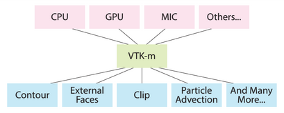

|
|
Portable Performance for Visualization Algorithms

Problem Overview
Power constraints are forcing supercomputing architects to shift their focus from FLOPs
to FLOPs-per-watt.
In response, these architects are choosing nodes consisting of many cores per chip and wide vector units,
since massive numbers of cores operating at relatively low clock speeds offer the best combination
of performance for price and energy.
However, there are many hardware architectures to choose from, both those available right now, and possibilities
for the future.
The top machines in the world currently are composed of technologies like
programmable graphics processors (GPUs,
e.g., NVIDIA Tesla), many-core co-processors (e.g., Intel Xeon Phi), and large
multi-core CPUs (e.g., IBM Power, Intel Xeon).
Further, future supercomputing designs may include low-power architectures (e.g.,
ARM), hybrid designs (e.g., AMD APU), or experimental designs (e.g., FPGA
systems).
This variety in hardware architecture is problematic for software developers, as
developers do not want to implement distinct solutions for each architecture.
This issue is particularly problematic in the context of visualization software, for two reasons.
One, visualization software often requires large code bases, with several community standards containing over a million lines of code.
Two, visualization software employs many different algorithms; as a result, optimizing performance for one
platform requires optimizing each of its algorithms, and not just one "key loop" as is often the case for
simulation codes.
Ideally, software developers could write a single implementation that would
simultaneously be insulated from architectural specifics and also
obtain excellent performance across all desired architectures.
This goal is one of the main drivers behind the recent push for domain-specific
languages (DSLs) in high-performance computing.
In the case of visualization software, three significant efforts --- Dax, EAVL,
and PISTON --- all realized this goal by building a DSL-like infrastructure on top of data-parallel primitives.
The three efforts have now merged into a single one, called VTK-m, with a goal of providing the same
functionality as VTK, yet with portable performance across multi-core and many-core architectures.
While data-parallel primitives have shown significant promise to date, the downside of the approach
is that our community's existing algorithms cannot be simply "ported" into this new framework.
In many cases, the algorithms need to be "re-thought" so that they can be composed entirely of data-parallel
operations.
While some algorithms map naturally, others are more difficult, since isolating out the interdependence
of operations --- needed so each core on a many-core node can do its own work without interacting with the other
cores --- is not always trivial.
Results
With our research, we are both evaluating the merits of the data-parallel primitive
approach, and also developing new algorithms in this environment.
Highlights include:
- Demonstration that ray-tracing, a computationally-intensive algorithm
with unstructured memory accesses, can perform at rates comparable to
specialized implementations.
Saying it another way, the hardware-agnostic approach from
data-parallel primitives can be almost as good as hardware-specific
approaches (Larsen, PacVis15).
- A data-parallel primitive algorithm for unstructured volume rendering
(Larsen, EGPGV15).
- A data-parallel primitive algorithm for external facelist calculation
(Lessley, EGPGV16), with a further expansion of the work looking at hashing (Lessley, LDAV17).
- A data-parallel primitive algorithm for filter-bank based wavelet compression
(Li, EGPGV17).
- A data-parallel primitive algorithm for graph problems, specifically maximal clique enumeration (Lessley, LDAV17).
CDUX People
External Collaborators
Publications
Efficient Point Merge Using Data Parallel Techniques
Abhishek Yenpure,
Hank Childs,
and Ken Moreland
Eurographics Symposium on Parallel Graphics and Visualization (EGPGV), Porto, Portugal, June 2019
[PDF] [BIB]
|
DPP-PMRF: Rethinking Optimization for a Probabilistic Graphical Model Using Data-Parallel Primitives
Brenton Lessley,
Talita Perciano, Colleen Heinemann, David Camp,
Hank Childs,
and E. Wes Bethel
IEEE Symposium on Large Data Analysis and Visualization (LDAV), Berlin, Germany, October 2018
[PDF] [BIB]
|
Maximal Clique Enumeration with Data-Parallel Primitives
Brent Lessley,
Talita Perciano,
Manish Mathai,
Hank Childs, and
E. Wes Bethel
IEEE Symposium on Large Data Analysis and Visualization (LDAV), Phoenix, AZ, October 2017
[PDF] [BIB]
|
Techniques for Data-Parallel Searching for Duplicate Elements
Brent Lessley,
Kenneth Moreland,
Matt Larsen,
and Hank Childs
IEEE Symposium on Large Data Analysis and Visualization (LDAV), Phoenix, AZ, October 2017
[PDF] [BIB]
|
Achieving Portable Performance For Wavelet Compression Using Data Parallel Primitives
Samuel Li,
Nicole Marsaglia,
Vincent Chen,
Christopher Sewell,
John Clyne,
and Hank Childs
Eurographics Symposium on Parallel Graphics and Visualization (EGPGV), Barcelona, Spain, June 2017
[PDF] [BIB]
|
External Facelist Calculation with Data-Parallel Primitives
Brent Lessley,
Roba Binyahib,
Rob Maynard,
and Hank Childs
EuroGraphics Symposium on Parallel Graphics and Visualization (EGPGV), Groningen, The Netherlands, June 2016
[PDF] [BIB]
|
Volume Rendering Via Data-Parallel Primitives
Matthew Larsen, Stephanie Labasan, Paul Navratil, Jeremy Meredith, and Hank Childs
EuroGraphics Symposium on Parallel Graphics and Visualization (EGPGV), Cagliari, Italy, May 2015
[PDF] [BIB]
|
Ray-Tracing Within a Data Parallel Framework
Matthew Larsen,
Jeremy Meredith,
Paul Navratil, and
Hank Childs
IEEE Pacific Visualization, Hangzhou, China, April 2015
[PDF] [BIB]
|
VTK-m: Accelerating the Visualization Toolkit for Massively Threaded Architectures
Ken Moreland,
Chris Sewell, William Usher, Li-ta Lo, Jeremy Meredith, Dave Pugmire,
James Kress,
Hendrik Schroots, Kwan-Liu Ma,
Matt Larsen,
Hank Childs,
Chun-Ming Chen, Robert Maynard, and Berk Geveci
Computer Graphics and Applications, May/June 2016
[LINK] [BIB]
|
Visualization for Exascale: Portable Performance is Critical
Ken Moreland, Matt Larsen, and Hank Childs
Supercomputing Frontiers and Innovations, December 2015
[LINK] [BIB]
|
|